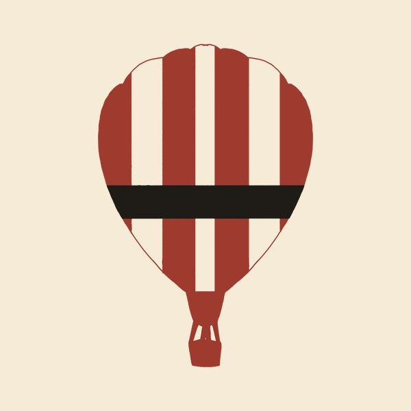

Design choices
A quick look at the colors, type and artwork behind this site.
Color
Four core colors do almost everything: page red, cream, black ink and turkey red. The rest are quiet supporting shades.
- Page red#A32E27The background of every page.
- Cream#F5EBD7Text on red, buttons, the footer and the envelope.
- Black ink#1F1B16The night scene, the tulip and text on cream.
- Turkey red#B5302ATiny accents, like the balloon band.
- Light paper#FBF3E4The envelope and soft highlights.
- Soft pink#F0C9C0Dimmer text on the red background.
- Warm gray#6B6254Captions and labels on cream.
Type
Drew
IM Fell French Canon, for my name, headings and navigation.
I make things that are easy to use and a little bit lovely.
IM Fell DW Pica, for everything you read.
Artwork
The drawings are all my own, and they repeat across the site so it feels like one place.
 The tulipThe mark in the sidebar, the browser tab icon and the link preview card.
The tulipThe mark in the sidebar, the browser tab icon and the link preview card.- The envelopeOpens on the home page to start the balloon.

The hot air balloonFloats up and down on the home page. The duckHops in the footer scene and sits beside a project title.
The duckHops in the footer scene and sits beside a project title.